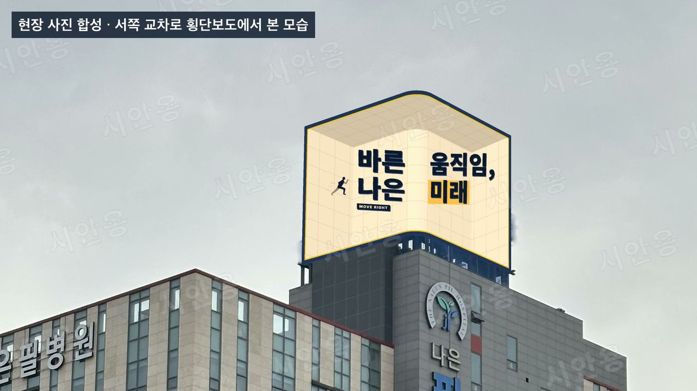
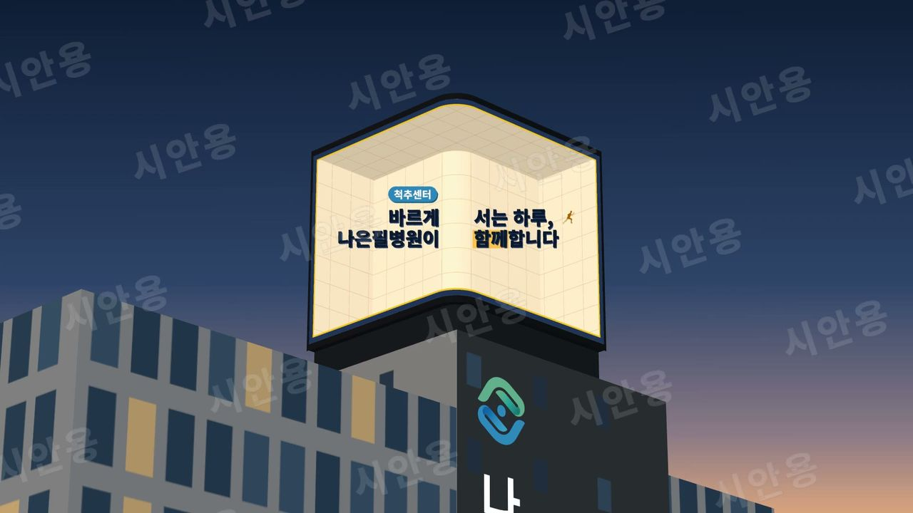

바른 움직임,
나은 미래
나은필병원 ㄴ자 옥상 LED · B안 15분 · 2026.11.20
슬로건 50:50 구성 시안
기존 공익 슬로건 10개와 원장님 슬로건 10개를 한 칸씩 번갈아 넣었습니다. 원장님 슬로건에는 진료과 이름표와 내용에 맞는 아이콘 배지를 예전 관절 배지처럼 붙였습니다.
전체 15분 (900초)
한 쌍 45초 = 슬로건 12초 + 로고 화면 33초
슬로건 20칸 = 공익 10 + 원장님 10
로고 화면 20칸은 지금과 같습니다
15분 구성
색 칸이 슬로건(12초), 회색 칸이 로고 화면(33초)입니다. 칸을 누르면 아래 화면으로 이동합니다. 슬로건 바탕색은 다섯 칸마다 아침·한낮·오후·저녁 색으로 바뀝니다.
아침 · 크림한낮 · 복숭아오후 · 버터저녁 · 노을 분홍
0:003:457:3011:1515:00
공익 슬로건원장님 슬로건 · 무릎관절·수부원장님 슬로건 · 어깨·척추·족부로고 화면
길에서 보이는 모습
아래 20칸 화면은 LED에 펼쳐 놓은 평면 그림입니다. 실제로는 지금 영상처럼 입체 방 안에 들어가 길에서 보면 깊이가 생깁니다.


슬로건 20칸
관절건강,
함께 해요!
가벼운 걸음,
가벼운 일상
무릎 아파도 걸어야 할까?
내 무릎에 맞는 운동과 치료
맞잡은 손,
함께 걷는 삶
인공관절, 내 무릎처럼
ROSA 로봇 인공관절 수술
Feel Good,
Feel Better!
오늘도 웃는 하루!
밤마다 아픈 어깨,
회전근개를 확인하세요
두 편 모두 회전근개 내용이라 한 칸으로 묶었습니다.
웃음 가득한
내일
컵 들기도 힘든 팔꿈치,
테니스 엘보 예방부터
움직임이
건강이다
허리 디스크 수술,
양방향 내시경으로
‘안전하게’처럼 결과를 보장하는 듯한 표현은 심의에서 걸릴 수 있어 뺐습니다.
큰 행복은
작은 손에서부터
반복되는 손목 통증,
원인부터 확인하세요
하루 만 보
걷기 실천
밤마다 저린 손,
전문의와 상담하세요
바른자세
평생건강
손가락 절단 사고 시,
119와 함께 전문병원으로
응급처치 순서 대신, 길에서 한눈에 읽히는 한 줄로 줄였습니다.
함께 여는
희망
걷기 힘든 발바닥 통증,
족저근막염을 확인하세요
‘망가진다’처럼 겁을 주는 표현은 부드럽게 바꿨습니다.
원장님 슬로건 다듬기
보내주신 영상 11편의 화면 문구를 멀리서도 한 번에 읽히는 두 줄로 줄였습니다. 회전근개 두 편(4·5번)은 한 칸으로 묶어 10칸을 맞췄습니다.
| 칸 | PPT 영상 | 원래 화면 문구 | 전광판 문구 | 진료과 | 아이콘 |
|---|---|---|---|---|---|
| 02 | 8번 · 관절건강 함께해요 | 관절건강 / 함께 해요! | 관절건강, 함께 해요! | 무릎관절센터 | 무릎 관절 |
| 04 | 9번 · 무릎 운동과 치료 | 무릎 아파도 걸어야 할까? / 내무릎에 맞는 운동과 치료 / 정확한 진단과 올바른 솔루션 | 무릎 아파도 걸어야 할까? 내 무릎에 맞는 운동과 치료 | 무릎관절센터 | 다리 |
| 06 | 6번 · ROSA 로봇 인공관절 | 인공관절, 내 무릎처럼 / ROSA 로봇 인공관절 수술 | 인공관절, 내 무릎처럼 ROSA 로봇 인공관절 수술 | 무릎관절센터 | 수술 로봇 |
| 08 | 4·5번 · 회전근개, 어깨 운동 4가지 | 밤마다 심해지는 어깨 통증, 회전근개손상을 확인하세요 / 회전근개 손상 예방 운동 | 밤마다 아픈 어깨, 회전근개를 확인하세요 | 어깨·상지센터 | 어깨 관절 |
| 10 | 3번 · 테니스 엘보 | 컵 들기도 힘든 테니스 엘보 / 예방이 최선입니다 | 컵 들기도 힘든 팔꿈치, 테니스 엘보 예방부터 | 어깨·상지센터 | 팔 |
| 12 | 7번 · 허리 디스크 양방향 내시경 | 허리 디스크 수술 / 양방향 내시경 수술로 / 정밀하고 안전하게 | 허리 디스크 수술, 양방향 내시경으로 | 척추센터 | 척추 |
| 14 | 1번 · 손목 통증 TFCC | 반복되는 손목 통증, / 진료로 원인을 확인하세요 | 반복되는 손목 통증, 원인부터 확인하세요 | 수부·미세재건센터 | 손·손목 뼈 |
| 16 | 2번 · 밤마다 손 저림 | 밤마다 반복되는 손 저림 / 정확한 원인 확인을 위해 전문의와 상담하세요 | 밤마다 저린 손, 전문의와 상담하세요 | 수부·미세재건센터 | 저린 손 |
| 18 | 10번 · 손가락 절단 응급처치 | 손가락 절단 사고 발생 시, 당황하지 말고 !!! / 119에 전화 / 전문병원으로 신속히 이송 | 손가락 절단 사고 시, 119와 함께 전문병원으로 | 수부·미세재건센터 | 구급상자 |
| 20 | 11번 · 족저근막염 | 걷기 힘든 통증 족저근막염, / 무시하다간 허리까지 망가진다 | 걷기 힘든 발바닥 통증, 족저근막염을 확인하세요 | 족부·족관절센터 | 발 뼈 |
확인 부탁드릴 것
병원에서 정해 주실 것
- 원장님 슬로건 문구 · 위 표의 전광판 문구로 괜찮은지
- 진료과 배정 · 이름표에 넣은 센터가 맞는지
- 의료광고 심의 · 진료 내용이 들어가므로 심의가 필요한지 병원에서 확인
- ROSA 로봇 문구 · 병원에서 쓰는 장비 이름과 표현이 맞는지
- 남길 공익 슬로건 10개 · 바꾸고 싶은 문구가 있으면 오른쪽 목록에서 골라 주세요
이번 구성에서 빠지는 공익 슬로건 10개
- 나은 움직임, 나은 일상
- 다시 걷는 행복
- 바른 자세 바른 생활
- 건강한 걷기 습관
- 걷기운동 함께해요
- 매일걷기 평생행복
- 자세부터 바르게
- 몸도 마음도 튼튼하게
- 움직이면 건강해요
- 건강한 하루 첫 걸음